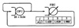

The technique of hierarchical decomposition produces exact results for networks with product form solutions. However, its real application is not for product form networks since the decomposition may turn out to be computationally more expensive than straightforward MVA for such networks. The real advantage of the hierarchical decomposition is in the fact that it can be used to approximately solve nonproduct form networks. The approximation is good if there are only a few components that do not satisfy the product form conditions and their interactions with the rest of the network is low. In such cases, the designated subnetwork consists of the nonproduct form components, and the remaining subnetwork is replaced by an FEC. Product form solution techniques can be used to solve the shorted model and find the service rates for the FEC. The equivalent network can then be solved by an appropriate non-product form technique or simulation. Since solving a nonproduct form network is computationally very expensive, the reduced number of service centers in the equivalent network considerably reduces the computation time.
36.3 LIMITATIONS OF QUEUEING THEORY
There are a number of real-life queueing behaviors that are not easily modeled by current queueing theory. If the system you are trying to model has any of the following behaviors, you may find it hard to model using queueing theory:
- 1. Nonexponential Service Times: Most of the results about queueing network models, with the clear exception of operational analysis, require assuming exponential distribution of service times. Several studies, for example, Suri (1983), have shown that the results obtained are robust in the sense that a slight departure from the assumption does not make a significant difference in the result. Nonetheless, it must be pointed out that the error in predicted device utilizations is much less compared to that in response times and queue lengths. If accuracy in queue lengths is critical, one may have to use a simulation technique with the given service time distribution.
- 2. Train Arrivals: Bulk or group arrivals at a service center can be modeled under certain restricted conditions, for example, if the intergroup time is exponentially distributed. In computer networks, Jain and Routhier (1986) found the packet arrival pattern to follow a “train model” such that arrival of a packet makes the next packet more likely to appear shortly. This is different from group arrivals in the sense that there is a significant correlation between successive interarrival times that makes the problem difficult to model.
- 3. Fork and Join: Fork and Join primitives are used in computer systems to create and synchronize subprocesses. This causes the number of jobs in the system to change and also invalidates the assumption of independence among jobs. Queueing models are unsuitable for analyzing systems with such primitives.
- 4. Load-dependent Arrivals: Computer networks and distributed systems have intelligent load-balancing policies that cause new jobs or packets to go to one of a number of devices depending upon the load observed in the recent past. Such load-dependent arrivals are difficult to model.
- 5. Blocking: In computer systems, excessive queueing at a device may result in a “flow-off” signal, which results in blocking at other devices. Current queueing models cannot easily analyze such blocking.
- 6. Transient Analysis: Most of the queueing theory results are valid only during steady state. Many systems are so dynamic that they hardly ever reach a steady state. In such cases, a transient analysis would be more useful than steady-state analysis.
- 7. Contention: The service disciplines used in queueing models, such as first come, first served or last come, first served, are too simplistic to model some real systems. One example is that of service by contention, as in Ethernet local area networks, where several stations can attempt to use the medium and resolve the contention using a set of rules. Such service algorithms are not easy to model with queueing theory.
- 8. Mutual Exclusion: In distributed systems, several jobs attempting to use a resource have to follow a set of mutual exclusion rules. For example, two users attempting to read the same file can read it simultaneously, but two users attempting to read and write the same file cannot do so simultaneously. Such mutual exclusion rules are not easy to represent in queueing models.
- 9. Response-dependent Arrivals: If a packet or a request stays too long in a queue, it may be retransmitted by the source, thereby increasing the queue length even further. This is similar to the load-dependent arrivals except that the positive feedback resulting from more arrivals with longer queues may take the system to an unstable state such that a transient increase in response time leads to a continual increase in load and response time.
- 10. Memory Modeling: Memory is a resource that is shared among several jobs. The number of jobs is often limited by the available memory. Further, virtual memory allows a trade-off between available physical memory and the number of visits to the paging device. Such trade-offs are difficult to analyze with queueing models.
- 11. Defections from the Queue: One method used to avoid the instability caused by response-dependent arrivals in computer networks involves setting a maximum limit on the time a packet or request is allowed to stay in the queue. Thus, the packets that have been in the queue for a long time are dropped from the queue on the assumption that they may have already been retransmitted by higher protocol layers. Such defections from the queue are difficult to analyze using queueing models.
- 12. Simultaneous Resource Possession: In computer systems, a job may continue to compute while its I/O requests are progressing in parallel. Thus, the job may be simultaneously using two or more resources of the system. This phenomenon is similar to the fork and join discussed earlier and is difficult to analyze with queueing models.
- 13. Think Time: The time taken by a job waiting for human input is usually modeled as “think time.” Modern computer systems have several new facilities, such as windows, type-a-head, mnemonic commands, and pull-down menus, which make the usual representation of the human as a delay center with think time invalid. Multiple windows make the human a resource with queueing; type-a-head results in overlap between computation and thinking; mnemonic commands have made the type-in part of the think time very small; and pull-down menus have further cut the time required to think about possible alternatives. These new behaviors require a new model for representing think times in computer systems.
In human life, customers have even more sophisticated behaviors than packets or requests that lead to such interesting but difficult to model phenomena as biggest first service, cheating and bribing for queue positions, balking before entering a queue, and jockeying among many queues.
EXERCISES
- 36.1 Determine the system throughput and response time for the system in Figure 36.5 using the load-dependent, MVA. The service rates µ(j) of the load-dependent service center as a function of number of jobs j at the center are 1.429, 1.628, and 1.660, respectively, for j = 1, 2, ..., 3.

FIGURE 36.5 Queueing network model with a load-dependent server.
- 36.2 Use the hierarchical technique to analyze the system of Exercise 35.1. Use the CPU as the designated subsystem. Determine the throughput of the shorted system for N = 1, ..., 3 jobs in the system. Then use load-dependent MVA to analyze the equivalent system. Verify that the final results are the same as those obtained in Exercise 35.1.
){kind=link}
){kind=link}